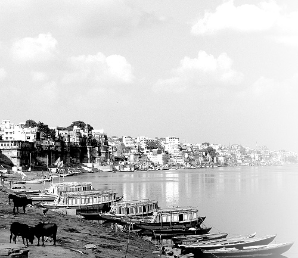
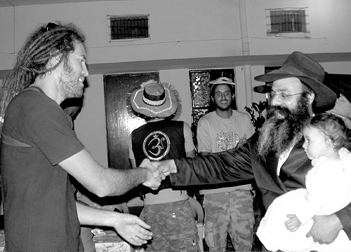

Shlichus in the Land of Idol Worship
How do you prepare a city full of idols for Moshiach? This is the remarkable shlichus of Rabbi Shmuel Yizhar and his loyal wife, which seems to directly mimic the work of Avrohom Avinu.

Varanasi, in southern India, is perhaps the most impure city in the world. All the residents are fervent idol worshipers who bow down to idols made of wood and stone. People from all over India go to Varanasi in their old age in order to die there, at which time their bodies are cremated and the dust thrown into the Ganges River that flows nearby.
The city consists of narrow alleyways, dusty marketplaces, rickety rickshaws, “sacred” cows and a bustling street life.
Traffic in the old city entails crossing narrow cobblestone alleys cut like mazes through markets and storefronts. Cows roam freely, grazing on garbage and snatching fruits and vegetables from inattentive shopkeepers.
Aside from the Ganges River and its religious significance, there are other sites that attract tourists in droves: a university where religion is studied and huge temples located in the heart of the old city. Varanasi is also one of the main centers for studying classical Indian music, yoga and meditation, with tourists and pilgrims coming from all over the world to study under famous gurus, yogis, and instructors. Some say Varanasi is supposedly the oldest city in the world. It is not just another city in India, but one of the “holy” cities, a mystical center visited by tens of thousands of people.
Plenty of Jews visit this center of impurity. Over the years, even the shluchim skipped over this city whose atmosphere is one of impurity. Four years ago, a few bachurim went to Varanasi in order to print the Tanya. A year later, Rabbi Shmuel Yizhar and his wife accepted the challenge of being mekarev Jews in this place polluted by idols. R’ Shmuel was familiar with the city from before he became frum, and he sees being on shlichus there as a closure of sorts.
The couple opened a Chabad house serving Jewish tourists who visit Varanasi for short periods, and those who are living there for years; including musicians or people who are “finding themselves.” The Chabad house has regular minyanim, shiurim and one-on-one learning, Shabbos meals and daily kosher meals. “When a Chassid walks around here in Chassidic dress, it makes a tremendous impact,” says R’ Yizhar.

SOUL STIRRINGS
How did the Yizhars end up in Varanasi? Before he became frum, R’ Shmuel would visit Varanasi every year for a few months and he got to know it well.
He was born in Yerushalayim near the famous Machane Yehuda market. His family then moved to Rechovos:
“I got the usual Israeli education without too much tradition. I was an outstanding athlete and threw myself into the game of handball, as a member of the Israeli national team. When I was bar mitzva I felt spiritually inspired for a while, which happens to many Israeli kids who meet with a rabbi, learn the sidra and put on t’fillin for the first time in their lives. I put on t’fillin every day for a while, but since nobody around me was religious, my enthusiasm waned and I stopped putting on t’fillin.”
In the army, Shmuel served in communications. Four days after he was discharged, he traveled to Thailand. He had a tremendous desire to travel and see the world.
“For five years I traveled around Australia, Brazil and nearly all the European countries. I spent quite a bit of time in India. In Europe, I set up stands to sell jewelry and sunglasses and I would go to India to relax. In India, I studied music and even opened a music school in Dharamsala. In hindsight, I realize what a deep personal search I was going through. I always knew there was a Creator, but it’s a long way from there to Judaism and keeping Torah and mitzvos.
“In the course of my travels, I read a lot of Tanach, mainly Koheles and Iyov. I would also read the writings of Eastern leaders and philosophers. I twice attended s’darim that were organized by Chabad in Nepal and Bangkok, but to me they were enjoyable Israeli experiences and nothing more. Every few months I would go back home to visit my family and friends; then I would board a plane again.”
After twelve years abroad, Shmuel decided to try his luck in Eretz Yisroel. He attended one of the colleges in order to study software engineering and enjoyed it. When he graduated, he became a lecturer in this field. For a number of years he gave classes at Michlelet High-Tech and at the Open University where he earned a nice salary. He was financially stable. This went on until the high-tech bubble burst, when he had to forgo a significant chunk of his salary. That got him back on a plane to India once again.
“That was 5763 and my first stop was Dharamsala. I was going to India with a different attitude because of something that happened to me a few months earlier.
“One day, I was scratched by a street cat. I foolishly did not think it needed to be treated, particularly when I felt fine. A few days later, I suddenly began to tremble. My temperature soared and I was taken to the hospital where I was treated with antibiotics. None of the doctors knew what the problem was. This happened six times and each time I was hospitalized and released.
“The last time I was hospitalized, a religious Jew came into my room and talked to me. I was holding a philosophy book at the time. He asked me about what I was reading and I told him. He dismissed my explanations and said, ‘Drop the nonsense. The holy Torah is the most interesting thing in the world.’ I was annoyed and told him to promote his own position without dismissing other people’s positions. Nevertheless, after he left my room, I felt that he might be right.
“Later on, I had another interesting incident that connected me to my Jewish side. It was when a good friend asked me to go along with him to the Kosel and I happily agreed. He davened near the stones and I waited for him. I was so alienated at the time that I did not understand why I should pour out my heart near a historical old wall. Then a young bachur came over to me, a Breslover baal t’shuva, and he asked me, ‘Could you give me ten Euro so I can fly to Uman?’ I looked in my pocket and found exactly ten Euro.
“I was taken aback. How did he know I had ten Euro? I considered this a sign from heaven that I should give it to him.
“Some time later, the doctors finally figured out that my shaking and fever came from Cat scratch disease (also known as CSD). That’s when I remembered that I had been scratched by a cat months before. They gave me the proper treatment and a short while later I flew to India. As soon as I landed I traveled to Varanasi where I already had a place to stay.”
MY FIRST CONTACT WITH T’HILLIM
“I wanted to relax, but what I experienced there was amazing and inspiring. Every night I would take a walk but I felt alienated from the place. I felt a strong desire to connect with my Judaism. I began talking to G-d in my heart. Everything that interested me on previous visits no longer did; I felt they were all false. I felt I wanted to connect with my Jewish roots. However, I did not know what these roots were.
“I felt I was going crazy. What was happening to me? I asked myself tough questions. Today, I know that a strong war was being waged between my Yetzer Tov and my Yetzer HaRa. After a few months I went to Goa where I met a good friend who had gotten involved with Breslov. I told him what I had been going through and asked, ‘Do you think I’ve gone mad?’ He smiled and said, ‘Your neshama has begun to wake up.’
“What pushed me even further was a Shabbos we spent at the Chabad house there, which was run by R’ Shai Ezran at the time. This was the first time in my life that I had an aliya to the Torah. He said interesting things and I felt I was being exposed, for the first time, to a wondrous spiritual world. I wanted to learn more and more. From Goa I went to Varanasi where I had a music school. Before I went, my friend said a line that stayed with me, ‘In the merit of T’hillim said by simple Jews, Moshiach will come.’
“I planned on traveling onward to the Himalayas. Every year I would make my way there and every time, I would go to a small village in the area where I would spend time alone. It was two weeks before Pesach and on my way to the Himalayas I stopped off in Rishikesh where I was given a Chitas. I opened to the Tanya section and tried reading it but did not understand any of it.
“I was with a group of gentile musicians who had come with me. We usually played music together in the evening, but one night, when I started playing with them, I felt sick. I left them and went up to my room. I took the Chitas and began saying T’hillim. I remembered what my friend had told me about saying T’hillim. It was difficult and unfamiliar language and I broke my teeth over it.
“I began getting up at six o’clock, before the others, and saying T’hillim. I felt that deep inner yearnings were roiling up inside me. One day, I went out on the balcony of my room and began singing songs to Hashem. I sang for two hours, singing every song I could remember that had Hebrew words. All the guests of the motel came out of their rooms and looked at me in astonishment, but I didn’t care. Since that Shabbos, I always kept my head covered. I also decided to stop smoking on Shabbos.”
Four months later, Shmuel arrived in Dharamsala where he met the shliach, Rabbi Dror Moshe Shaul. One of the bachurim helping out at the Chabad house was Boaz Shachar, who was greatly mekarev him.
One day, Shmuel had a stomachache. Since the pain didn’t stop, he decided to go home. A friend who met him on his way to the travel agent suggested that he write to the Rebbe. “You have a business here; you can’t just leave it all and go home.”
Shmuel, who had become familiar with Chabad, agreed to his suggestion and went directly to the Chabad house. He had two questions: about his health and about a shidduch.
“I naively thought the Rebbe would be confused if I asked both questions together,” said Shmuel with a smile. “So I only wrote about health. Although I still did not know what ‘Rebbe’ meant and I had doubts, I was determined to do whatever the Rebbe said.
“To my great surprise, the answer was all about shidduchim and at the end was one line about health, that I should ask the rosh yeshiva. R’ Dror Moshe Shaul suggested that I learn with him every day at six in the morning. ‘That’s the only time I am free,’ he said.
“So every morning at dawn, I walked over to the Chabad house and we learned together. After only four days, the pain went away.”
RETURN TO INDIA
In 5765, Shmuel was back home with his parents in Rechovos. People at the Chabad house in India connected him with the right people in Rechovos and he began learning in Yeshivas Daat, headed by Rabbi Yitzchok Arad. In yeshiva, his Chassidic character was formed and they made his shidduch. The couple moved to Tzfas though he constantly thought about going on shlichus. He knew from personal experience how important it was to have the right people at the right time in the right place.
“After our first daughter was born, our talks about shlichus became more serious. I wanted to return to India which I knew so well, but my wife Aviva, who had never been there, was afraid, and rightly so. India is not an easy country for someone who is not used to it. Shlichus for a few months in Dharamsala did not convince her to remain there. I almost gave up on shlichus in India and then my wife was reading the Seifer Ha’shlichus and surprised me.
“‘What did you say is the name of the city that you want to go to on shlichus?’ she asked.
“‘Varanasi,’ I said.
“‘Let’s go! The Rebbe wants shlichus!’
“I was overjoyed. We began raising money and preparing to go. Then we heard about the brutal attack in Bombay. Whoever knew us and about our impending shlichus, tried to dissuade us from going, but we were determined. At a certain point, we began opening to answers from the Rebbe that had to do with the importance of shlichus. We understood from this that the Rebbe wants us on shlichus and it was time to go.”
There were more obstacles along the way, such as instead of getting their visas within a few days, which is what usually happens, it took a few months. Throughout this time, they lived in a dilapidated apartment and slept on thin mattresses because they were expecting to leave momentarily.
They took a flight to Delhi, and from there they made their way to Varanasi. They arrived on a Sunday. After renting a room in a local motel, they looked around for a place to live as well as a Chabad house. It was a very hot and humid time of year. Many places that seemed suitable they couldn’t enter due to the numerous idols. Day after day, for four days, they trudged around looking for a place to live.
“We lived on oranges and tomatoes. It would be Shabbos in two days and we didn’t know what to do. I sent a text to R’ Arad in Rechovos and asked him to ask the Rebbe for a bracha for us. We spent hours walking around the city, disappointed time after time. On one street, a cow suddenly cut us off. She walked thirty meters and then stopped and looked at us. We felt she was inviting us to follow her. It sounds strange but that’s what we did.
“The cow kept strolling and we followed until it reached a large, beautiful house with a big yard where it stopped near the gate. My wife said, ‘Let’s go in. This has to be a sign from Above.’ Looking back, I realize how desperate we were, but that is what happened. We walked in and saw a magnificent place, unusual for Varanasi. We met the landlord and said we wanted to rent the entire place. We said the price we were willing to pay and he said he would think about it.
“As he was closing the gate behind us, I got a text from R’ Arad which said, quoting T’hillim: The bird also has found a house, and the swallow a nest for herself – that is the Sh’china, you should be successful in shlichus.
“I understood that he had written to the Rebbe for us and knew that all would be well. Just half an hour passed and the landlord came to the motel we were staying at and said he had sent away all the guests and he gave us the keys.
“As soon as we got the place, we went into a frenzy of shopping. We had to start from nothing and there were only two days until Shabbos.
“I invited the first Israeli I saw for Shabbos. I told him that we were celebrating the first birthday of our daughter. The Israeli came right before Shabbos and quickly prepared a vegetable dish. We quickly made challa. We bought plenty of mashke. Although we knew that not many people would be coming, we figured many people would be coming on subsequent Shabbasos. We were surprised when dozens of Israelis came. Somehow, each of them heard about the Chabad house that had just opened. The simcha on that Shabbos was immense. We had minyanim that first Shabbos. On Sunday, we had big streets signs made in Hebrew so anyone who came to the city would know where to find us. The rest is history.”
The daily schedule at the Chabad house is intense – mikva in the morning, a Chassidus shiur, minyan for Shacharis, breakfast. Throughout the day there are chavrusos for learning Chassidus, Halacha or inyanei emuna. Every night there is a Tanya class and after supper there is a farbrengen and talking into the night.
FROM THE DEPTHS OF KLIPA
The only way to be successful is not to be fazed by what is going on around you.
“We constantly remind ourselves of why we are here. There are lofty souls here that are hard to find in other places. It is because of their high level that they fell to such depths. We have to do everything we can to rescue them and get them back on track. I traveled a lot in India and the Far East, but what’s happening in Varanasi is extreme idol worship.
“There are Israelis living here for many years, who consider themselves Indian in every respect. One day before Purim, I was standing and talking to one of the longtime Israelis here, a musician. He insisted on not stepping foot in the Chabad house. There are others like him. I was standing outside with him and trying to convince him to join us, with his friends, for the Purim seuda. ‘It’s not a t’filla and not a shiur – it is Jewish simcha at its best,’ I said, but he refused to come.
“I suddenly noticed an Indian ‘Baba’ with long hair and a long beard, wearing the traditional robe. He headed in our direction. The Israeli looked at him and said to me, ‘Maybe you’ll convince him to come.’ Annoyed, I said to him, ‘You compare yourself to this Indian? We are Jews.’ But the Israeli did not respond, and just continued looking at the approaching figure. He said, ‘His situation is more of a lost cause than mine. Maybe you’ll convince him to go to the Chabad house.’ As he said this, the ‘Baba’ passed by and greeted me in Hebrew. I was flabbergasted. He looked Indian! I couldn’t believe he was Jewish.
“Instinctively, I took them both by the hand and dragged them into a Chassidic dance on the street. ‘Ashreinu, ma tov chelkeinu – how fortunate we are that we are Jews.’ I sang at the top of my lungs. The man told me he was in India for seventeen years, his name was Yiftach, and throughout those years he had not seen a religious Jew. I did not see him after that, but I have no doubt that our encounter was meaningful to him. The day will come when it will have its effect on him.
“In general, the fact that a Chassid walks around here proudly, dressed as a Chassid, can have a powerful impact on those who are so far that you can’t even tell that they are Jews.
“In Varanasi there is a woman who is here for twenty years already. She’s the doyen Israeli here. I met her before I was religious. She’s around sixty and immersed up to her neck in Eastern religion. Interestingly, one of her daughters became a Breslover baalas t’shuva. Of course, the mother doesn’t enter the Chabad house. She’s occupied with teaching nonsense to tourists. At the beginning of our shlichus here, I said to my wife that we have to be mekarev this woman. When that will happen, many other neshamos who were influenced by her will be saved.
“One day, I left the Chabad house and saw her. I asked her what she was up to and she said she was in the area by chance. I invited her in, but she politely refused and promised to come another time.
“Near us lives an Israeli who came to study music. She was one of his teachers. He also makes a point of not coming to our Chabad house, but he agreed to be the tenth man for a minyan only if we didn’t have a minyan and were missing a tenth. One Shabbos, we were missing a tenth and I sent someone to get him. It seems he was in the middle of a lesson with her. At first he tried to excuse himself but I insisted and they both came. They remained for the meal too.
“In the middle of the meal, she got up and said she wanted to tell a story about an Israeli that she knew in Varanasi who became a Chabad Chassid. She told my story. Apparently she had done her research. When she finished, she asked me whether I know him.
“I said ‘Of course I know him, it’s me!’ I had nothing to be ashamed of. On the contrary, if I was able to change my life, you too – I said, turning to her – can set aside your past and return to the truth.
“Since that visit, she began visiting us every so often. She spent Purim with us and after many years, she decided to visit Eretz Yisroel.
“She is not yet religious but it’s a good start. You don’t discard years of impurity and idol worship in a day.
“There is another musician who has been here for seven years. I knew him too from before I became religious. When we first opened the Chabad house, I met him in Delhi. He looked at me and said he knew me from somewhere. I told him about my previous ‘gilgul’ before I became a baal t’shuva. He knew what Chabad is and I invited him to visit us in Varanasi, where he lived. He agreed to visit, but said he didn’t think I had anything new to tell him.
“He did not show up at the Chabad house and when I saw him on the street one Friday, I invited him again and he couldn’t refuse. At first he was uncomfortable. He’s the type of Israeli who does not enjoy being together with other Israeli tourists and hearing their stories. He felt like a resident already. I understood him, because I used to be the same way.
“We established a chavrusa that Shabbos but before we began learning he said to me again, ‘What new thing are you going to tell me? I am forty years old and have traveled the world. I’ve seen and heard it all.’ Rather than answering him, we began learning Chassidus. He quickly realized that he didn’t know anything about Judaism and Torah. He understood that Judaism is not just a snippet of history about Jews who lived in the Middle Ages, but a living Torah that has something to say about every aspect of life.
“Today, he is a regular participant at shiurim and our other activities and he identifies as a Chassid of the Rebbe. He even brings other people to us.”
LETTING THE REBBE DO THE WORK
While on shlichus, you can see how the Rebbe sets things up. It happens, said R’ Shmuel, that a fellow shows up who is interested, but nothing happens, nothing changes. There are also guys who are openly hostile, who you would think will never move in the right direction, and then they suddenly make great strides and become baalei t’shuva.
“A young Mizrachi couple came to the Chabad house. He is a violinist and knows a lot about Chassidus and the Rebbe. They were our guests for a while and he played beautiful Chabad niggunim for us. They asked the right questions and it looked as though they were heading in the right direction, and yet, when they left us, there was no indication of any change in them whatsoever. There is no doubt that they did, in fact, change, but externally they left the way they came.
“Until recently, we had a guy with us who was born into a frum home and dropped it and went to the other extreme. Since there is a lot of music in this city, he came to study how to play various instruments. He visited us often but always came at the end of davening or Kiddush, just for the meal. If he came on a weekday, it was deliberately after the shiur. He was so cold to anything having to do with Torah that I thought that any efforts towards him should not be in order to see results, and whatever would be – would be.
“Then one Shabbos there came the turning point. I told our guests the story about the letter I had written to the Rebbe before I became religious about health and the answer and miracle that transpired. He listened and was impressed. After the meal, he said that he also wanted to write to the Rebbe about something that was on his mind. He came in the middle of the week, five minutes after I began the Tanya shiur. This time, he participated in the shiur. It was chapter 26 that begins with a description of two people wrestling, where even the weaker one – if he is joyful – can prevail over the stronger one who is weighted down by sadness. He asked questions throughout the shiur. I could see that he wasn’t asking questions out of spite but out of interest.
“At the end of the day, I escorted him outside and he said he wanted to tell me something. He said he had come in order to write to the Rebbe about something that bothered him. He is a successful person, healthy, but he always felt sad. Before he had a chance to write however, he had gotten an answer in the shiur, directly from the Alter Rebbe himself.
“The following Shabbos I was pleasantly surprised to see him appear for davening and Kiddush with a kippa, which he had insisted on not wearing on previous visits. When I proclaimed ‘Yechi,’ I heard someone respond and when I turned around, it was him. The next day, he came to the minyan again and got an aliya. That Shabbos, he committed to putting on t’fillin. I was shocked by this significant change in him. Since then, I don’t judge or assess anyone. I let the Rebbe do the work.”
HASHGACHA PRATIS ON EREV PESACH
As someone on shlichus for his third year, R’ Shmuel has numerous hashgacha pratis stories which can fill a thick volume. Here is one example:
“In our second year here, three days before Pesach we had to get chicken and wine from the Chabad house in Delhi. We usually get our chickens from Kasol where R’ Yoel Caplin shechts, or from Dharamsala where R’ Dror Moshe Shaul shechts. They send the chickens to Delhi and we get them from there.
“The trip from here to Dharamsala or to Kasol takes two days and it’s only one day to Delhi. To prevent the chickens from spoiling they are sent to Delhi where they are frozen until we show up to take them. A one day trip won’t make them spoil.
“That day, we had a lot going on with the preparations for Pesach. I was at the Chabad house with another bachur and three Indian workers who did not know English. I could not rely on them to prepare the place for Pesach. The shluchim in Delhi said they had the chickens and they were taking up space. I had to decide who to send.
“I couldn’t send an Indian worker and I couldn’t send the bachur. It was impossible to keep an eye on the Indians and direct them while simultaneously working with tourists. It was noon and I couldn’t decide what to do. I called Delhi, hoping they had heard of a Jewish backpacker who was on his way to Varanasi. I knew this was problematic, because no backpacker would be happy about dragging boxes of chickens along with him, but I decided to try my luck.
“On my way from the Chabad house to our private quarters where we have a telephone, I saw a tall fellow walk in. He had long blonde hair, sunglasses, wore boots and leather clothes. His appearance certainly stood out. When he walked in, I saw the three Indians run over to him and kiss his shoes with a great display of respect. I didn’t know who he was, having never seen him before. He greeted me in Hebrew so I could tell he was Israeli.
“We gave one another a friendly hug and he told me that he was in Varanasi for eleven years, was married to a gentile woman from South Korea and had a daughter. He said he was known in town because he played a certain kind of drum that is difficult to play. He performed with famous musical groups and that is how the Indians knew him. I sensed that he wanted to connect with us.
“His life story was so interesting that I forgot about the phone. We sat down for a long talk over a cup of coffee and after an hour I suddenly remembered that I had to make a phone call. He surprised me when he said, ‘I have to go to Delhi to get a certain form. Do you need anything from there?’
“I was flabbergasted. What was the likelihood of this happening? I told him how amazing his offer was. He took down the information and set out. The next day, he dropped off the delivery near the door of the Chabad house. He made it so much easier for us.
“The story does not end there. I invited him to the seder and he came without his gentile wife and daughter. He knew it wasn’t appropriate. A month later he returned to Eretz Yisroel, got more involved in Judaism, left his wife until she finished a long conversion process, and then they married.”
***
I asked R’ Shmuel about chinuch. He said, “It’s really not simple. We keep a close watch on the children and are always looking for solutions. In a city like Varanasi there are constant celebrations and festivals for their deities. Day and night you can see trucks passing by playing loud music with thousands of people dancing behind. The music wakes the children up. In order to counteract that, we bought some CD’s of Chassidic music and we play them loudly every time these processions pass by.
“We explain to the children about our uniqueness, as opposed to their false idols. We have lessons every day, each child on his level. When we have bachurim helping out here, they learn with the children. In addition to the learning, we have games with Jewish themes, so they aren’t bored. The children are shluchim in every respect. Visitors to the Chabad house are impressed by them, and what we try to accomplish in long conversations, they, in their innocence, achieve easily.
“In order to make the tourists an integral part of our family, we give everyone a job. One is assigned breakfast, another arranges the s’farim, another is in charge of cleanup, another prepares the food for Shabbos. One of the jobs is to play with our children, of course, under our supervision. Each time, we see real changes in those who were assigned the children. The children always feel that they are on shlichus.”
***
As to publicizing about Moshiach and Geula, R’ Shmuel has this to say, “The Rebbe says the world is ready and we see this most clearly in those places that are the most decadent. I don’t think there is any spiritually lower place than Varanasi, and here it is clear how the world is ready.
“You see Jews here who have descended to the lowest level of idol worship, like in the time of Avrohom Avinu. You don’t have to be an expert on neshamos in order to sense that these are lofty souls that fell into klipa. It’s as Chassidus explains – that which is higher, falls lower.
“When people ask me whether the topic of Moshiach interferes with our work, I don’t understand the question. Without Moshiach we would not be able to be mekarev anyone. They are in such a low place that only the subject of Moshiach, the loftiest thing, can bring them back. If you talk to them about tzitzis or apple in honey, they won’t listen. Tell them about the imminent Geula though and how the world is about to make a deep spiritual shift, and they will listen. Moshiach interests them and changes them. If it works here, then the entire world is ready for Geula.”
***
As to plans for the future:
“Our most practical plan is for the Rebbe to appear, at which point, our shlichus to prepare the world is over. Until that happens, we will do our best to be mekarev more and more people, no matter what spiritual level they are on.
“This year, we plan on building a mikva which is one of the hardest things on shlichus. We know that building a mikva in a city, purifies the entire city. We hope this is the final act which will tip the world to z’chus. If a place like this becomes tahor, then the Geula can certainly come!”
Nosson Avrohom. "Shlichus in the Land of Idol Worship." Beis Moshiach, no. 836 (June 5, 2012).